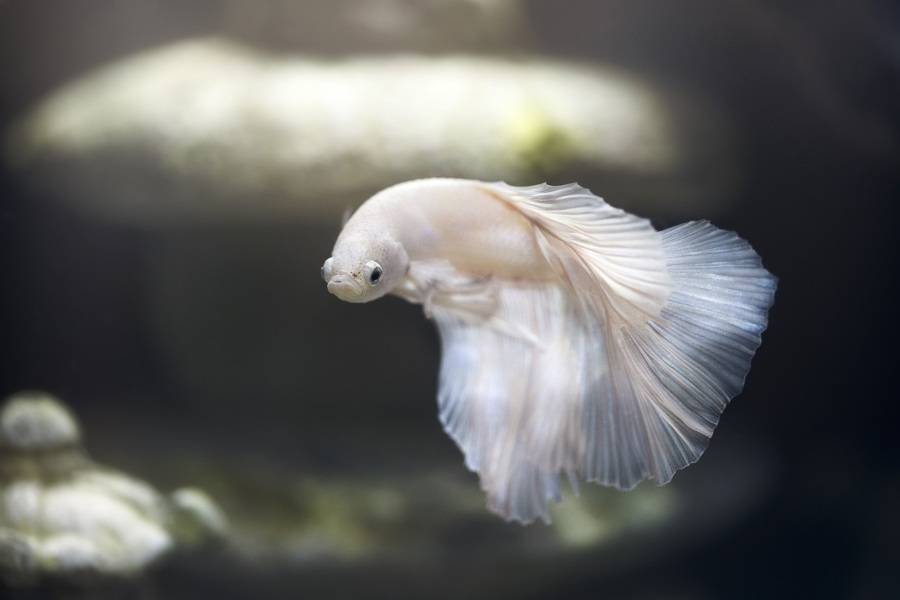

1. ELECCIÓN DE LA MASCOTA Y LA LLEGADA A CASA: Lo primero que usted se tiene que preguntar es si está dispuesto a adoptar un animal y si este le conviene. Para ello deberá estar dispuesto a dedicar parte de su tiempo a la nueva mascota, ser paciente y perseverante, compartir parte de su tiempo libre con el animal y saber actuar con firmeza ante su posible comportamiento.
2. ALIMENTACIÓN: Es muy importante para mantener a nuestro a animales de compañía que ingieran una dieta equilibrada que satisfaga sus necesidades energéticas y proporcione los nutrientes adecuados. Es conveniente prevenir la obesidad. Un animal normal debe tener las costillas palpables y forma de reloj de arena visto desde arriba. Actualmente existen numerosas dietas comerciales en el mercado que pueden ayudarnos a evitar la obesidad. En periodos de gestación o lactancia se debe proporcionar a las perras un alimento comercial de gama alta sobre todo durante las tres o cuatro últimas semanas de gestación y durante toda la lactancia. Se debe igualmente incrementar la ración sobre todo durante la lactancia a razón de 1,5 veces la cantidad necesaria para el mantenimiento normal durante la primera semana, 2 veces más en la segunda semana y hasta 3 veces más en la tercera semana de lactación.
3. HIGIENE:
Baño : Los expertos no se ponen de acuerdo en lo relativo a la frecuencia en la que se deben realizar los baños. En general esta no deberá ser inferior a una vez al mes.
Cepillado : La mejor manera de mantener su higiene sin alterar su piel es el cepillado diario.
Oídos : Se deben limpiar con una gasa. Hay productos específicos, se echan en el conducto auditivo y se masajea la zona, procediéndose después al limpiado con la gasa.
Uñas : En perros que no desgasten bien hay que cortarlas, sobre todo en los espolones.
4. EDUCACIÓN: Existe un periodo fundamental en el desarrollo de la conducta denominado “periodo de sensibilización ” que abarca desde las 3 a las 10 semanas y durante el cual el cachorro debe asimilar todo lo que ocurre en su entorno. La socialización del animal hace que acepten mejor a otros animales, tanto de su propia especie como de otras, y la habituación les hace capaces de enfrentarse a los estímulos ambientales que se van a encontrar a lo largo de su vida.
5. CICLO SEXUAL Y ESTERILIZACIÓN: Las perras pueden tener su primer celo entre los 6 y 10 meses de edad. La esterilización es un proceso quirúrgico que consiste en la retirada total o parcial de los órganos reproductores y se realiza tanto en los machos como en las hembras. Este procedimiento incrementa su calidad y esperanza de vida ya que disminuye la posibilidad de que se desarrollen infecciones uterinas, tumores y enfermedades de los órganos reproductores.
7. EJERCICIO FISICO: El ejercicio es necesario para permitir al perro expresar conductas caninas normales, como explorar, seguir rastros olorosos, etc. Además se puede aprovechar ese tiempo para mejorar el entrenamiento y estrechar las relaciones mascota-propietario.
Los gatitos se lamen el pelo para quitarse los pelos muertos y por ello pueden llegar al estómago y el intestino bolas de pelo causantes de vómitos o estreñimiento, lo que no le gusta ni a él ni a ti. Por eso, deberás comenzar a cepillarle el pelo a conciencia y regularmente desde pequeño. Si es un gatito de pelo corto, cepíllalo una vez a la semana. Si es de pelo largo, tendrás que hacerlo a diario, porque tiende a formar nudos.
Asegúrate de inspeccionar su pelo con regularidad, en busca de posibles pulgas, garrapatas y zonas enrojecidas o sin pelo. Si crees que hay cualquier problema, no dudes en acudir al veterinario.
La jaula: Elige una jaula amplia para que tu roedor se sienta lo más agusto posible y pueda corretear dentro. Como siempre, cuanto más grande, mejor; así evitarás que se estrese y pueda sufrir ansiedad.
El lecho: Para que los hámsters se sientan cómodos y puedan andar sobre un suelo blandito es necesario incluir un lecho en la jaula. Existen multitud de opciones, las más comunes son las virutas de madera, de fibra vegetal, de papel y de maíz. Las virutas de madera son las más aconsejables: absorben, no levantan polvo y no son tóxicas. Además, el lecho mejora la higiene y reduce la suciedad y los olores.
Casa o nido: Para cuidar un hámster de la mejor forma es fundamental incorporar una cueva, una casita o una caja donde pueda dormir, cobijarse y descansar. Dentro estará rellena de lecho o material para nido para proporcionarle comodidad y calor.
Ruedas de ejercicio y juguetes: Los hámsters necesitan hacer ejercicio todos los días y las ruedas son la forma más sencilla de satisfacer esta necesidad. Les encanta correr dentro de ellas y les ayuda a mantenerse activos y en forma para que estén sanos y felices. Los tubos y túneles son los accesorios favoritos de los hámsters. Hay jaulas que los incorporan y los conectan de un lado a otro por el exterior. Además, también hay accesorios modulares para que puedan pasar de una zona a otra a través de túneles. También puedes incorporar en la jaula pelotas, hamacas, escaleras… Cualquier accesorio que le permita hacer ejercicio y divertirse.
Bebederos: El hámster debe disponer de agua fresca y limpia 24 h. No utilices cuencos, pues en ellos se acumulan más residuos y el agua puede derramarse y estropear el lecho. Las botellas o dispensadores de goteo son la mejor opción: mantienen el agua limpia y protegida. Colócala a una altura adecuada para que puedan beber de forma cómoda.
1.- Información: antes de nada, acude a un centro veterinario especializado para informarte de los cuidados que requiere esa especie en concreto, y no te lances si no estás seguro de poder cumplir con todo lo necesario.
2.- Acuario: Busca acuarios adecuados para las especies que quieres tener. Recuerda, siempre ir al tamaño más grande que te puedas permitir.
3.- Agua limpia: Procura mantener el agua de los peces en perfecto estado para que puedan estar cómodos y disfrutar. Además la calidad del agua va a determinar el buen estado de salud del pez.
4.- Renovación del agua: se recomienda cambiar el 30% del agua de la pecera un par de veces por semana.
5.- Bomba de aire y filtro: los peces respiran oxígeno del agua, por lo que es esencial que tengan todo el que necesitan. Infórmate de qué necesita tu pez e instala la bomba necesaria.
6.- Iluminación: no dejes que estén siempre a oscuras, los peces también necesitan recibir luz y será tu labor proporcionársela.
7.- Veterinario: acude a tu clínica veterinaria siempre que sea necesario, resuelve dudas y cuida del animal evitando que enferme.